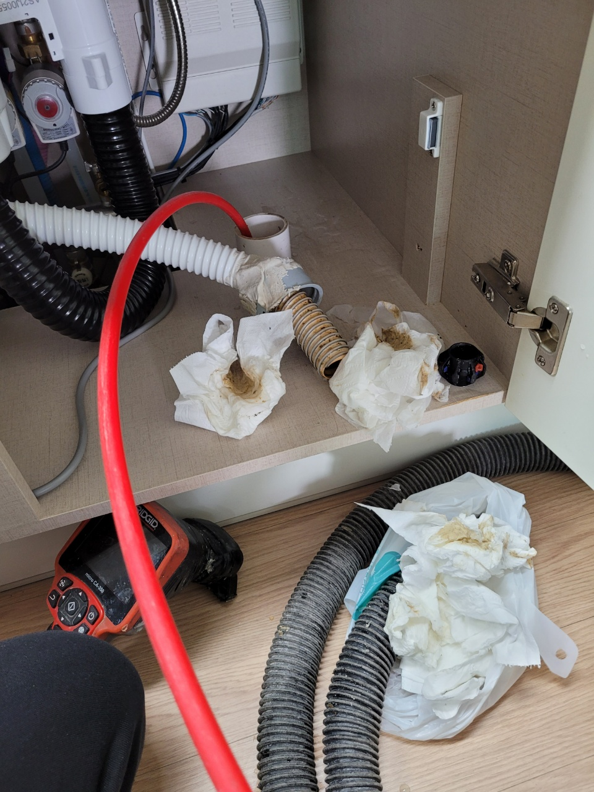
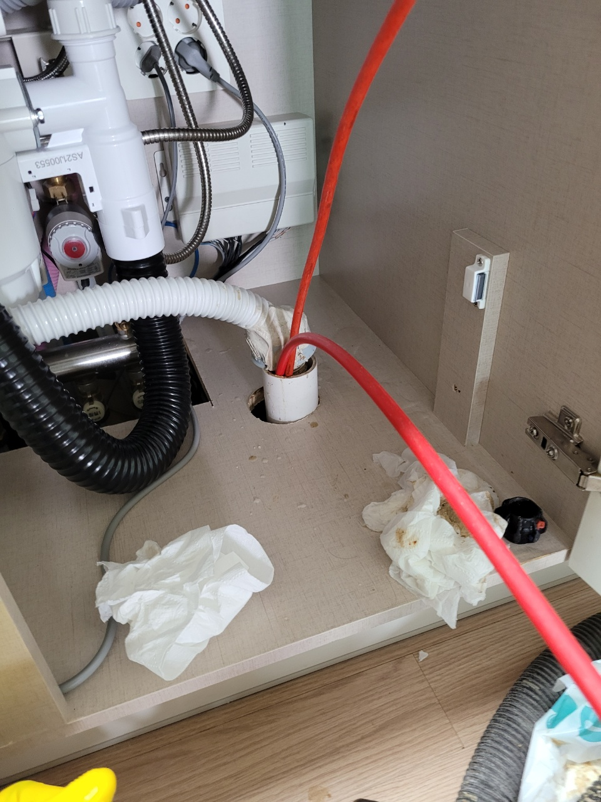

🏠 싱크리더 웰릭스 음식물처리기 막힘 해결
서울 싱크대막힘 전문 시공 후기

📋 작업 개요
- 위치: 서울
- 서비스 유형: 싱크대막힘, 하수구막힘, 배관막힘, 역류해결, 고압세척
- 작업 일시: 2022. 9. 22. 23:21
- 업체명: 하수구수사대 (010-5615-2118)
🔍 문제 상황
싱크리더 웰릭스 음식물처리기 막힘 해결
안녕하세요.
하수구배관케어 전문업체
"하수구수사대"입니다.
오늘은 싱크대하수구가 막혀서 고객님의
전화를 받고 출동한 현장인데요
음식물처리기를 사용하고 계셨고 음식물처리기회사에서
기사님이 방문하셨는데 하수구쪽에서 막혀 물을 사용하면
역루하는 상태였습니다.
싱크리더와 웰릭스 음식물처리기는 1차적으로 음식물을
갈아내고 2차적으로 미생물방식으로 분해하여 내보내는
방식입니다. 1차적으로 갈아내는 방식과다르게
미생물로 분해해서 내보내는 방식인데 금방넣은 음식물이
미생물로 단시간에 분해하는지는 의문입니다.
싱크리더 웰릭스 음식물처리기막힘 해결
음식물처리기에 넣지 말아야 할 음식물들이 있는데요

🔎 원인 분석
💡 전문가 진단: 정밀 진단 장비를 사용하여 슬러지의 고착 여부를 판명하고 타격/세척 작업을 실시했습니다.
예를들면 계란껍질이나 뿌리가있는 채소류,닭뼈나 조개껍질
그리고 쌀도 넣지 말아야 합니다.
계란껍질의 경우 갈려 내보내기는 하지만 껍질이 물에 뜨지않기
때문에 갈린 계란껍질은 하수구배관에 머물러있고 댐처럼 쌓여
물이 지나가지 못하게 막고 있기 때문에 막힘의 원인이 된답니다.
쌀같은 경우도 갈리기는 하지만 떡처럼 전분성분이 있어 서로
뭉쳐서 배관을 막게하는 주범입니다.
하수구입구쪽을 열어 내시경카메라로 보니 완전히 막혀 물이
고여있는것이 보였습니다.
2년전 음식물처리기를 설치할때 방문기사님께서 하수구 물이
잘빠지지 않는다고 하셨다는데요 이처럼 음식물처리기를
설치할때는 한번쯤은 물이 잘 내려가는지 테스트를
해보고 설치하는 것도 좋습니다.
테스트방법은 싱크대위에 물을 많이 받아놓고 한번에
내려주었을때 위에서 시원하게 물이 내려가는지
하수구에서 물이 역류하지는 않는지 확인을 해주는것도
좋은 방법입니다. 가장 확실한 방법은 내시경카메라로 확인을

🔧 작업 과정
해주는것이 좋습니다.
우선 입구부터 고여있는 물을 석션장비로 하수구에 있는
이물질과 함께 흡입하여 빼내었는데요 아무래도 하수구에
음식물찌꺼기가 썩으면서 심한 악취가 나기때문에
혹시 싱크대밑에서 악취가 난다면 하수구를 의심할 필요가
있습니다.
석션으로 이물질과 물을 제거하고 난 후 내시경카메라로
하수구를 다시 확인해보니 배관 위쪽에 기름덩어리가
많이 붙어있는것을 확인이 되었습니다. 이렇게 기름덩어리가
무너져 또 막힐수 있기때문에 모두 제거해주는것이 좋아요.
하수구에 기름이 붙는 이유는 여러가지가 있지만 대부분 기울기가
좋지않아 물이 고여있는 구간이 생기고 그곳에 기름이
정체되어 배관에 조금씩 붙어 덩어리가 되는 형태입니다.
여기서가 문제인데요 특히 음식물처리기를 사용하면
음식물을 갈아서 배출하기 때문에 물이 고여있는구간에
쌓이게되면 배관에 더 빨리 기름덩어리가 형성된답니다.
그렇게 때문에 음식물처리기를 설치하기전에 하수구
배관은 미리 점검해보고 설치하는것을 추천드리고 있어요.
이미 형성된 기름덩어리는 자연적으로 제거되지 않기 때문에
장비를 넣어서 제거해주는데요 마찬가지로 내시경카메라로
보면서 기름을 제거하기때문에 완벽하게 작업이 이루어지고
자신있게1년 AS를 해드리고 있습니다.
배관을 깨끗하게 세척하고나면 완전 새 배관처럼 되는데요
앞으로의 관리가 중요합니다. 그냥 쓰신다고 해도 오래
사용하시겠지만 그래도 좀더 관리를 한다면 악취도 없고 막힘증상도
없으시 관리를 해주시면 좋답니다.
한달에 한번정도 펑크린 또는 뚜러펑 의 배관세정제를


✅ 작업 완료
주무시기전에 넣어주시면 좋습니다. 배관에 조금씩 쌓여가는
기름성분을 녹여주는것이죠.
그리고 설거지를 할때 마무리하면서 물은 한바가지 정도
부어주시면 배관내 머물러 있는 이물질을 한번에 내려보낼수 있답니다.
하수구막힘으로 고민중이시라면
언제든지 "하수구수사대"로 연락주세요
365일 서울/경기/인천 출동대기중입니다^^




⚠️ 주방 싱크대 배관 막힘 예방 수칙
- ✅ 기름기가 묻은 식기나 프라이팬은 설거지 전 키친타올로 반드시 기름때를 닦아내세요.
- ✅ 주기적으로 싱크대 개수대에 뜨거운 물을 가득 받아 한 번에 내려 배관 내부 기름을 씻어내세요.
- ✅ 배수구 거름망을 미세한 필터로 사용하시고 음식물 찌꺼기가 틈으로 새어 들지 않게 관리하세요.
- ✅ 베이킹소다와 식초를 뜨거운 물과 함께 일주일에 한 번씩 부어주면 배관 살균과 막힘 예방에 좋습니다.
💡 핵심 정리
- 확실한 장비 작업(내시경 점검 및 샤프트 스케일링)으로 원인을 뿌리 뽑습니다.
- 작업 후 1년 이내에 동일한 부위 재발 시 100% 무상 A/S 서비스를 보장합니다.
- 서울 · 경기 · 인천 전 지역에 24시간 언제든 긴급 출동할 수 있도록 항시 대기 중입니다.
❓ 자주 묻는 질문 (FAQ)
🚨 서울 싱크대막힘 문제로 고민이신가요?
정확한 원인 진단과 확실한 시공으로 재발 없는 해결을 약속드립니다.
24시간 긴급 출동 | 서울 · 경기 · 인천 전지역 | 1년 내 재발 시 무상 A/S